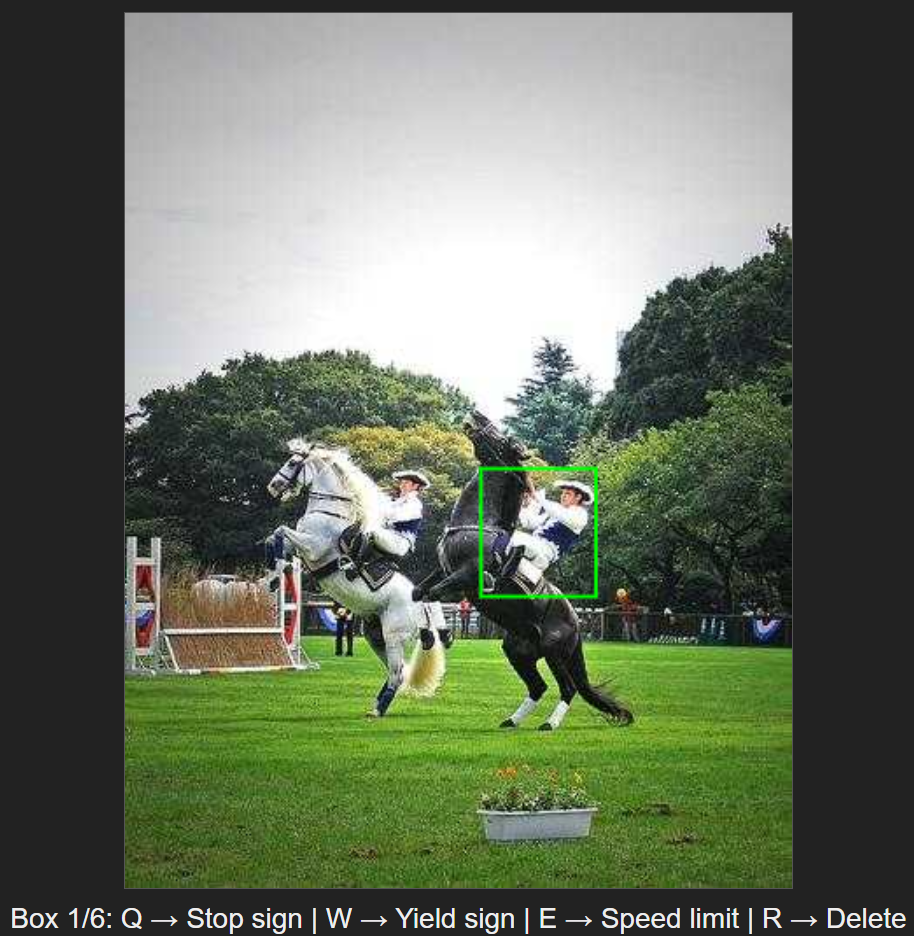
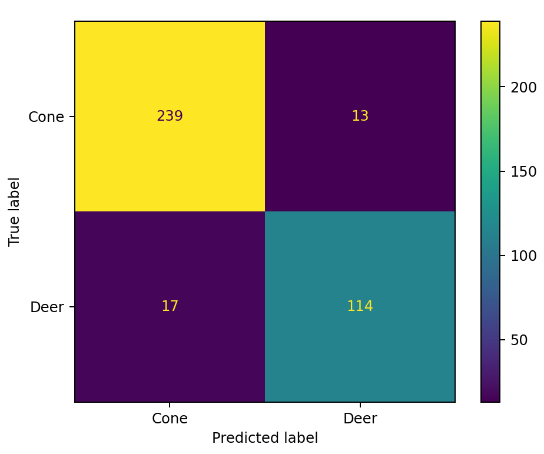

Wisconsin Autonomous is a competor in SAE
AutoDrive Challenge II whose goal is to make an autonomous vehicle. I was a part of the perception
team my first two years, now I serve as the president of the student org.
President
Team/project management
Elected president of the 50+ member student org, I have taken up the responsibility of
leading our team through the final year of our competition. Some of my responsibilities
include organizing our team to meet all major vehicle project deadlines, recruiting and retaining
members, and leading development of static deliverables (e.g. reports and presentations),
among other things.

Traffic Sign Labeling Environment
Python
Our object detection model currently does not discriminate between traffic signs (e.g.
stop signs and speed limit signs fell under the same class). I wrote a labeling
environment, deployed on a webpage, which iterated though our image data and showed
traffic sign labels to a human to sub-classify. Because of our vast quantity of data,
I designed for speed and parallelized the work so multiple people could label at once.
(The demo to the right is targeting humans in the data just as an example).
Traffic Light State/Relivancy Classification
Python · OpenCV
My second year, our object detection model reliably identified traffic lights, but we
needed to know which ones were relivant and the state of those lights. So, I wrote a
post classification script using color masking which addressed this problem.
Particularly, since I used color masking and the competition traffic lights had a
yellow background, I had to account and adjust for this. (The demo on the left uses
an off-the-shelf YOLO model, so don't focus on which traffic lights are detected.
Instead, pay attention to whether the detected lights are irrelevant (red) or relevant
(green), and the state of the relevant traffic lights).

Traffic Barrel Vs Deer Classifiier
Python · OpenCV · KNN
My first year, we had an unreliable object detection model. Particularly, we had trouble
classifying deers and traffic cones. I wrote a post classification script which used a
color graph in combination with a KNN to achieve over 90% accuracy while being
computationally light.